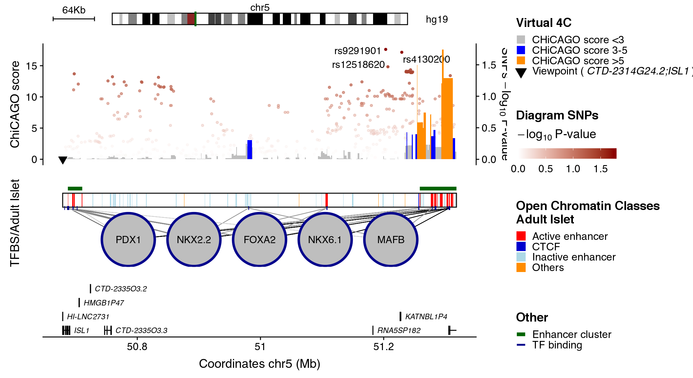
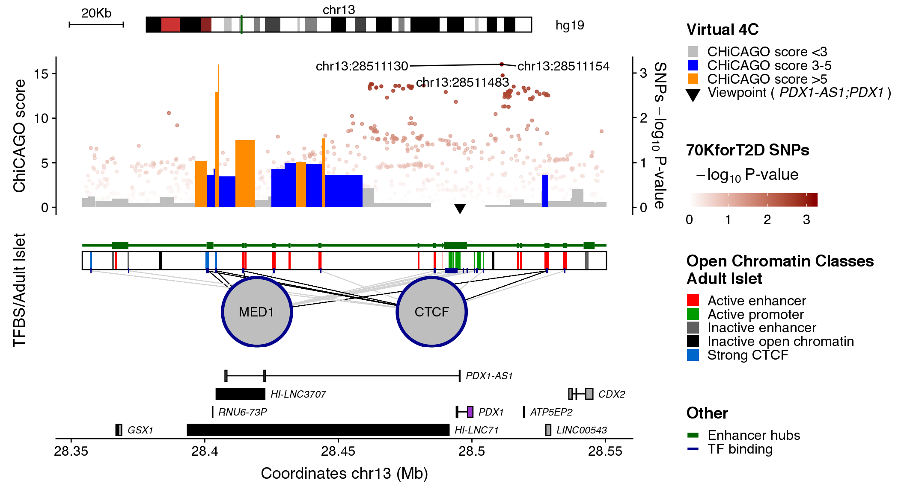
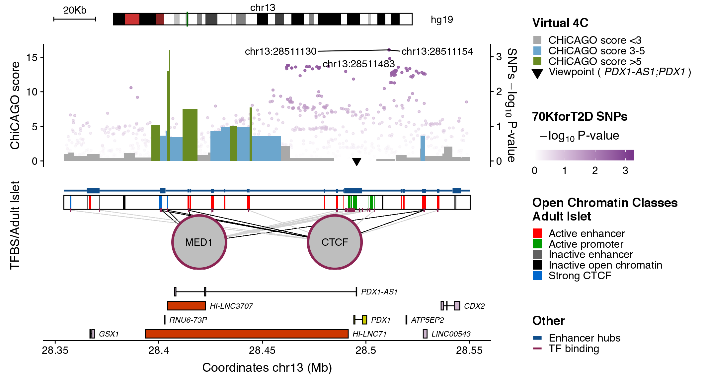
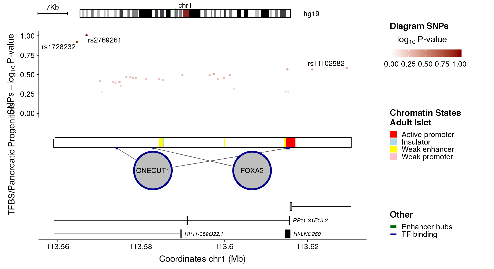
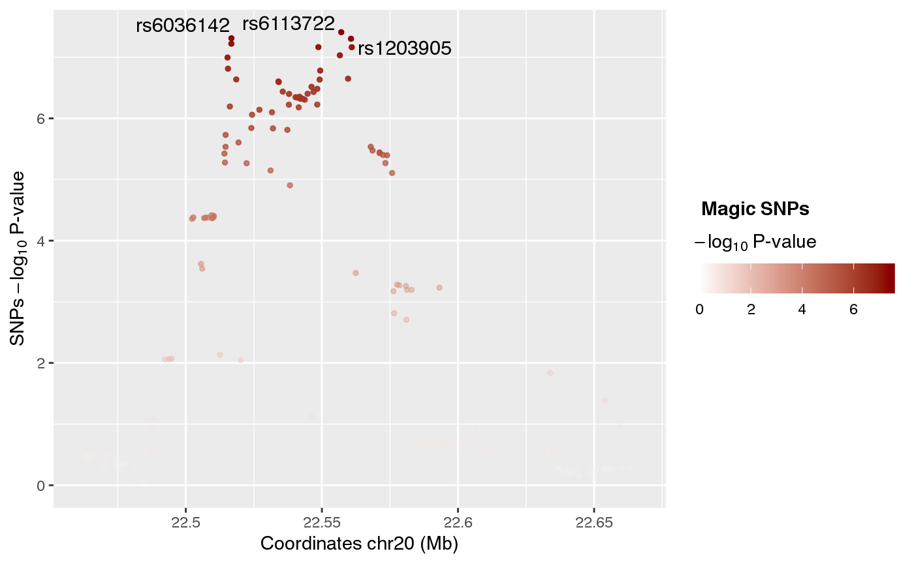
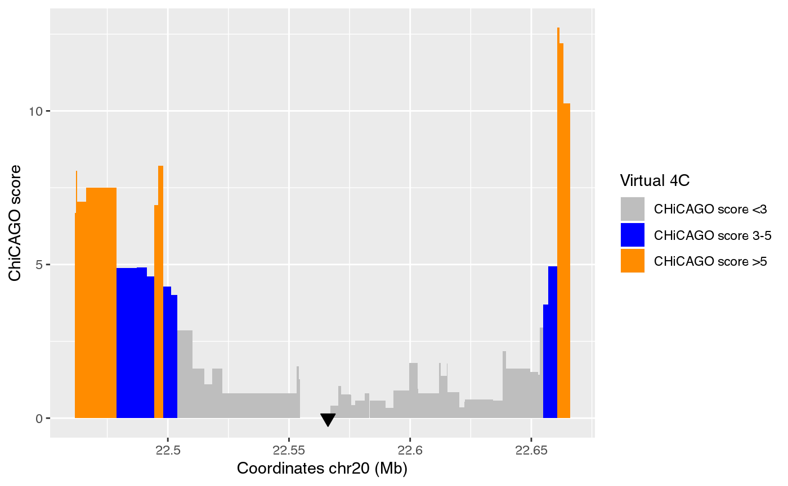
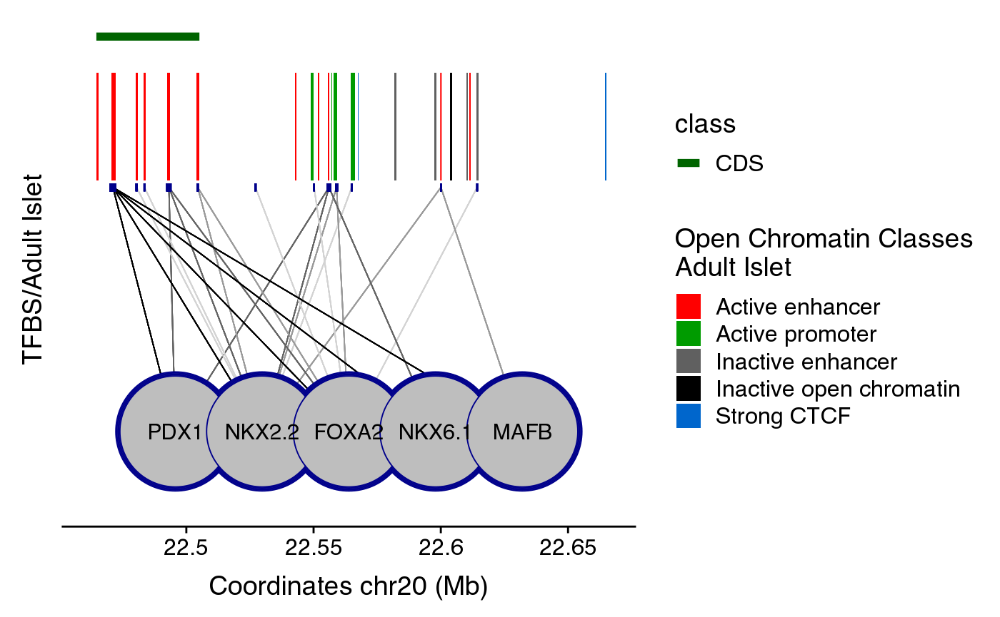
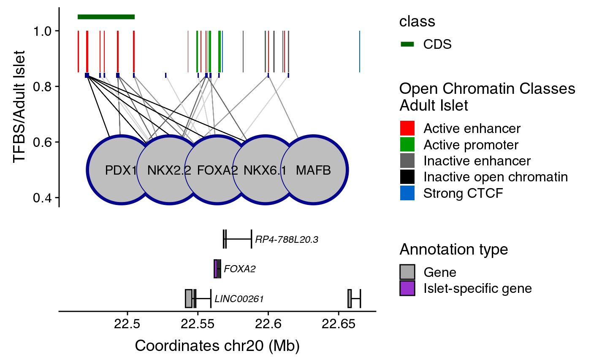

Using plotRegulome
Mireia Ramos-Rodríguez
using_plotRegulome.RmdIntroduction
The plotRegulome package has been developed with the idea of helping users produce and modify the Islet Regulome Browser plots.
Quick start
library(plotRegulome)
## Download IRB database
# dir <- "~/data/"
# path <- downloadIRB(output_dir=dir) # Download IRB data, returns path for database
## Define parameters for plotting
coordinates <- "chr5:50678921-51318155"
snps_dataset <- "diagram"
contacts_dataset <- "ISL1"
maps_dataset <- "openChromatinClasses"
clusters_dataset <- "enhancerClusters"
tfs_dataset <- "adult"
## Call ploRegulome function
plotRegulome(coordinates=coordinates,
snps_dataset=snps_dataset,
contacts_dataset=contacts_dataset,
maps_dataset=maps_dataset,
clusters_dataset=clusters_dataset,
tfs_dataset=tfs_dataset,
path="~/data/IRB_database/")
Datasets
In order to download all necessary datasets to plot islet data with this package, there is a wrapper function that does it for you. You just need to provide the path where the datasets for the IRB need to be stored.
dir <- "~/data/"
downloadIRB(output_dir=dir) # Download IRB dataYou will see that the donwloaded data has the following structure:
IRB_database
|-- code
|-- hg19
| |-- clusters
| |-- genes
| |-- maps
| |-- snps
| |-- tfs
| `-- virtual4c
| |-- 1
| |-- 2
| |-- 3
| |-- 4
| |-- 5
| |-- 6
| |-- 7
| |-- 8
| `-- 9
`-- shared
Each folder inside hg19 contains the datasets related to selectable data, summarized in the table below:
| Name | Dataset | Reference |
|---|---|---|
| Clusters | ||
| Enhancer Hubs | enhancerHubs | Miguel-Escalada et al. (2019) |
| Super Enhancers | superEnhancers | Miguel-Escalada et al. (2019) |
| Enhancer Clusters | enhancerClusters | Pasquali et al. (2014) |
| Stretch Enhancers | stretchEnhancers | S. C. J. Parker et al. (2013) |
| COREs | cores | K. J. Gaulton et al. (2010) |
| Maps | ||
| Adult Islets - Chromatin Classes | chromatinClassesReduced | Miguel-Escalada et al. (2019) |
| Adult Islets - Chromatin Classes | openChromatinClasses | Pasquali et al. (2014) |
| Pancreatic Progenitors | progenitors | Cebola et al. (2015) |
| Adult Islets - Chromatin States | chromatinStates | S. C. J. Parker et al. (2013) |
| SNPs | ||
| 70KforT2D | 70KforT2D | S. Bonàs-Guarch et al. (2018) |
| Diagram | diagram | A. P. Morris et al. (2012) |
| Magic | magic | R. A. Scott et al. (2012) |
| TFs | ||
|
Adult Islets |
structure | Miguel-Escalada et al. (2019) |
| Pancreatic Progenitors | progenitors | Cebola et al. (2015) |
|
Adult Islets |
adult | Pasquali et al. (2014) |
The name used for appropriatly calling datasets are listed in the column Dataset and in the documentation of plotRegulome.
Additionally, this package also includes gene annotation datasets (genes folder) that are shown by default:
| Name | Dataset | Reference |
|---|---|---|
| Gene annotation | gene_annotation_ensemblv75 | Zerbino et al. (2018) |
| RNA-seq | gene_moran | Morán et al. (2012) |
| lncRNA | lncRNA | I. Akerman et al. (2017) |
Finally, virtual 4C data from Miguel-Escalada et al. (2019) can be found in virtual4c folder. Each bait is named with a numerical identifier and they are divided in folders according to the first number of the ID. This is done to prevent having t0o many files in one directory. The correspondence of bait IDs and bait names can be found in virtual4c/baitID_keyTable.rda.
Plot description

The plot illustrates regulatory regions, transcription factors binding sites, chromatin interaction data and GWAS variants in which the sequence of the base genome is represented on the horizontal axis.
In the upper part of the plot a green line on the chromosome ideogram reflects the portion of the chromosome displayed. Each dot represents a genomic variant, being the color intensity of the dot proportional to -Log10 p-value of association, as indicated on the side of the plot. The rs# ID depicts the top associated variants in the locus.
The virtual 4C data is visualized as an interaction frequency histogram plot, where the bait/viewpoint is depicted as a black triangle region. A distal peak in the signal indicates that there is a chromatin interaction event with the bait/viewpoint. The interaction significance is depicted by a color code reflecting the CHiCAGO scores. Such chromatin interaction maps were extracted from promoter capture HiC data centered on the queried bait region, hence, virtual 4C.
The black box in the middle of the plot contains vertical colored bands depicting different chromatin states, open chromatin classes or regulatory elements as described in the legend above the plot. Black lines connecting the circles (each representing a different transcription factor) to the black box, point to the genomic location of each transcription factor binding site. The color intensity of such lines is proportional to the number of co-bound transcription factors.
Annotated genes are depicted as horizontal gray lines at the bottom of the plot. Boxes along the line correspond to positions of coding exons. The color of the box indicates the type of annotation: black boxes indicate lncRNAs, grey boxes indicate genes and purple boxes represent islet-specific genes.
Plotting the Islet Regulome plot
For a detailed description of all plot elements you can visit isletregulome.com and go to Info > Description of the plot or read the section Plot description below.
In order to plot an Islet Regulome image, you will need to provide the coordinates of the region you want to plot, together with the names of the datasets you want to show. Please check ?plotRegulome or the Datasets section to see all available datasets and their code names.
library(plotRegulome)
coordinates <- "chr13:28354157-28550368"
snps_dataset <- "70KforT2D"
contacts_dataset <- "PDX1"
maps_dataset <- "chromatinClassesReduced"
clusters_dataset <- "enhancerHubs"
tfs_dataset <- "structure"
plotRegulome(coordinates=coordinates,
snps_dataset=snps_dataset,
contacts_dataset=contacts_dataset,
maps_dataset=maps_dataset,
clusters_dataset=clusters_dataset,
tfs_dataset=tfs_dataset,
path="~/data/IRB_database/")
You can save the Islet Regulome plots using the ggsave function from the ggplot2 package.
ggsave(file="example_plotRegulome.png",
width=11, height=6)Customizing Islet Regulome plot colors
Additional arguments to change the plotting color for the different elements can be used:
-
snps_col. Character with the name or the hex value for the darkest color to use when plotting SNPs. Default:dark red. -
contacts_col. Named list with the colors for each grouping of CHiCAGO scores. Default:c("0"="grey", "3"="blue", "5"="dark orange") -
cluster_col. Character with the name or the hex value for color to use when plotting enhancer clusters. Default:dark green. -
tfs_col. Character with the name or the hex value for the TFs border. Default: “dark blue”. -
genes_col. Named list with the colors for each type of gene annotation, wheregenerefers to gene annotation,lncto lncRNAs andspecto islet-specific genes. Default:c(gene="dark grey", spec="darkorchid3", lnc="black")
plotRegulome(coordinates=coordinates,
snps_dataset=snps_dataset,
snps_col="mediumorchid4",
contacts_dataset=contacts_dataset,
contacts_col=c("0"="dark grey", "3"="skyblue3", "5"="olivedrab4"),
maps_dataset=maps_dataset,
clusters_dataset=clusters_dataset,
cluster_col="dodgerblue4",
tfs_dataset=tfs_dataset,
tfs_col="violetred4",
genes_col=c("gene"="thistle3", "lnc"="orangered3", "spec"="yellow3"),
path="~/data/IRB_database/")
Random Islet Regulome plot generator
Finally, there is an additional argument to the plotRegulome function that generates random plots with random available datasets. For simplicity reasons, contacts_dataset are not used, as it is not likely that a bait in the selected region would be randomly selected.
Any specifications on datasets will be overwritten when randomIRB=TRUE. However, you can still specify colors for the different data as explained above.
set.seed(2384982)
plotRegulome(randomIRB=T,
path="~/data/IRB_database/")
#> ------------------------------------------------------
#> -- Random set generated at chr1:113559015-113630541 --
#> ------------------------------------------------------
#> Clusters: enhancerHubs
#> Maps: chromatinStates
#> SNPs: diagram
#> TFs: progenitors
#> ------------------------------------------------------
Plotting datasets separately
In case you are interested in plotting one or a few datasets from the Islet Regulome, this package also contains the necessary functions to do so.
The first step is to create an object with tha dataset and type of data you want to plot. For this reason, there are a set for creator functions that will compute all necessary data to plot a specific dataset:
-
create_snpsRegulome. Generates asnpsRegulomeobject containing SNPs data in the region of interest. -
create_contactsRegulome. Produces acontactsRegulomeobject containing regions in contact with the bait of interest and their CHiCAGO scores. -
create_mapsRegulome. Produces amapsRegulomeobject with the chromatin maps in the region of interest. -
create_clustersRegulome. Produces aclustersRegulomeobject with information of the enhancer clusters in the reigon of interest. -
create_tfsRegulome. Produces atfsRegulomeobject with information on the TFBSin the region of interest. -
create_genesRegulome. Generates gene annotation in agenesRegulomeobject containing information of genes in the region, islet lncRNAs and their islet specificity.
All of these functions take a coordinates argument, which is a GRanges object with the coordinates of the region you want to plot, and an xxx_dataset (except create_genesRegulome), which contains the dataset name as defined in the section Datasets above. Each of this function has additional arguments which you can check in their corresponding check pages (i.e ?create_snpsRegulome).
For plotting each dataset, you just need to use the plot() function with the xxxRegulome object you just created. This will produce a list of ggplot layers that need to be added to a ggplot() function to generate the plot.
library(ggplot2)
library(plotRegulome)
coordinates <- "chr20:22461643-22666093"
snps <- create_snpsRegulome(coordinates=coordinates,
snps_dataset="magic",
path="~/data/IRB_database/")
ggplot() + plotR(snps)
contacts <- create_contactsRegulome(coordinates=coordinates,
contacts_dataset="FOXA2",
path="~/data/IRB_database/")
ggplot() + plotR(contacts)
Other types of dataset are of no much use when plot alone, such as tfsRegulome or clustersRegulome. You can also plot them together as follows:
enh <- create_clustersRegulome(coordinates=coordinates,
clusters_dataset="superEnhancers",
path="~/data/IRB_database/")
maps <- create_mapsRegulome(coordinates=coordinates,
maps_dataset="chromatinClassesReduced",
path="~/data/IRB_database/")
tfs <- create_tfsRegulome(coordinates=coordinates,
tfs_dataset="adult",
path="~/data/IRB_database/")
comb_plot <- ggplot() + plotR(enh) + plotR(maps) + plotR(tfs) + ylim(0.4,NA)
comb_plot
If you want to include the gene annotation, you should generate the plot separately and you can then combine it with the maps using plot_grid function from the cowplot package.
genes <- create_genesRegulome(coordinates=coordinates,
path="~/data/IRB_database/")
anno_plot <- ggplot() + plotR(genes)
library(cowplot)
cowplot::plot_grid(comb_plot + themeXblank(),
anno_plot,
ncol=1,
align="v",
rel_heights = c(0.6, 0.4))
References
Akerman, Ildem, Zhidong Tu, Anthony Beucher, Delphine M.Y. Rolando, Claire Sauty-Colace, Marion Benazra, Nikolina Nakic, et al. 2017. “Human Pancreatic \(\beta\) Cell lncRNAs Control Cell-Specific Regulatory Networks.” Cell Metabolism 25 (2): 400–411. doi:10.1016/j.cmet.2016.11.016.
Bonàs-Guarch, Sílvia, Marta Guindo-Martínez, Irene Miguel-Escalada, Niels Grarup, David Sebastian, Elias Rodriguez-Fos, Friman Sánchez, et al. 2018. “Re-analysis of public genetic data reveals a rare X-chromosomal variant associated with type 2 diabetes.” Nature Communications 9 (1). Nature Publishing Group: 321. doi:10.1038/s41467-017-02380-9.
Cebola, Inês, Santiago A. Rodríguez-Seguí, Candy H-H. Cho, José Bessa, Meritxell Rovira, Mario Luengo, Mariya Chhatriwala, et al. 2015. “TEAD and YAP regulate the enhancer network of human embryonic pancreatic progenitors.” Nature Cell Biology 17 (5): 615–26. doi:10.1038/ncb3160.
Gaulton, Kyle J, Takao Nammo, Lorenzo Pasquali, Jeremy M Simon, Paul G Giresi, Marie P Fogarty, Tami M Panhuis, et al. 2010. “A map of open chromatin in human pancreatic islets.” Nature Genetics 42 (3). Nature Publishing Group: 255–59. doi:10.1038/ng.530.
Miguel-Escalada, Irene, Silvia Bonàs-Guarch, Inês Cebola, Joan Ponsa-Cobas, Julen Mendieta-Esteban, Goutham Atla, Biola M. Javierre, et al. 2019. “Human pancreatic islet three-dimensional chromatin architecture provides insights into the genetics of type 2 diabetes.” Nature Genetics 51 (7). Nature Publishing Group: 1137–48. doi:10.1038/s41588-019-0457-0.
Morán, Ignasi, İldem Akerman, Martijn van de Bunt, Ruiyu Xie, Marion Benazra, Takao Nammo, Luis Arnes, et al. 2012. “Human \(\beta\) Cell Transcriptome Analysis Uncovers lncRNAs That Are Tissue-Specific, Dynamically Regulated, and Abnormally Expressed in Type 2 Diabetes.” Cell Metabolism 16 (4): 435–48. doi:10.1016/j.cmet.2012.08.010.
Morris, Andrew P, Benjamin F Voight, Tanya M Teslovich, Teresa Ferreira, Ayellet V Segrè, Valgerdur Steinthorsdottir, Rona J Strawbridge, et al. 2012. “Large-scale association analysis provides insights into the genetic architecture and pathophysiology of type 2 diabetes.” Nature Genetics 44 (9). Nature Publishing Group: 981–90. doi:10.1038/ng.2383.
Parker, Stephen C J, Michael L Stitzel, D Leland Taylor, Jose Miguel Orozco, Michael R Erdos, Jennifer A Akiyama, Kelly Lammerts van Bueren, et al. 2013. “Chromatin stretch enhancer states drive cell-specific gene regulation and harbor human disease risk variants.” Proceedings of the National Academy of Sciences 110 (44): 17921–6. doi:10.1073/pnas.1317023110.
Pasquali, Lorenzo, Kyle J. Gaulton, Santiago A. Rodríguez-Seguí, Loris Mularoni, Irene Miguel-Escalada, İldem Ildem Akerman, Juan J. Tena, et al. 2014. “Pancreatic islet enhancer clusters enriched in type 2 diabetes risk-associated variants.” Nature Genetics 46 (2): 136–43. doi:10.1038/ng.2870.
Scott, Robert A, Vasiliki Lagou, Ryan P Welch, Eleanor Wheeler, May E Montasser, Jian’an Luan, Reedik Mägi, et al. 2012. “Large-scale association analyses identify new loci influencing glycemic traits and provide insight into the underlying biological pathways.” Nature Genetics 44 (9): 991–1005. doi:10.1038/ng.2385.
Zerbino, Daniel R, Premanand Achuthan, Wasiu Akanni, M Ridwan Amode, Daniel Barrell, Jyothish Bhai, Konstantinos Billis, et al. 2018. “Ensembl 2018.” Nucleic Acids Research 46 (D1). Narnia: D754–D761. doi:10.1093/nar/gkx1098.